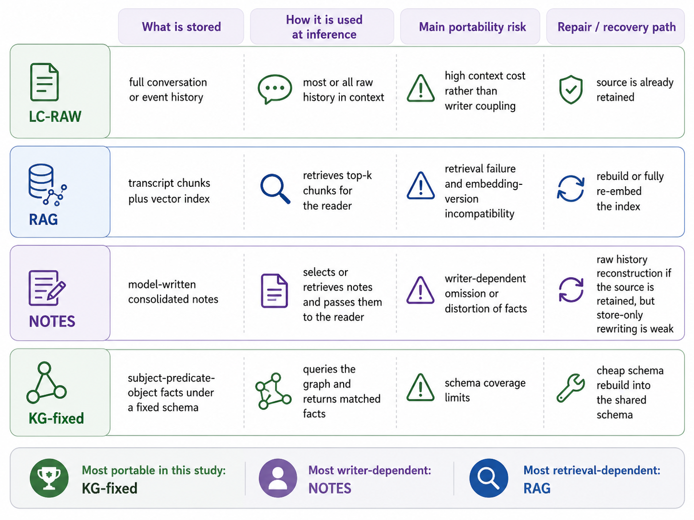
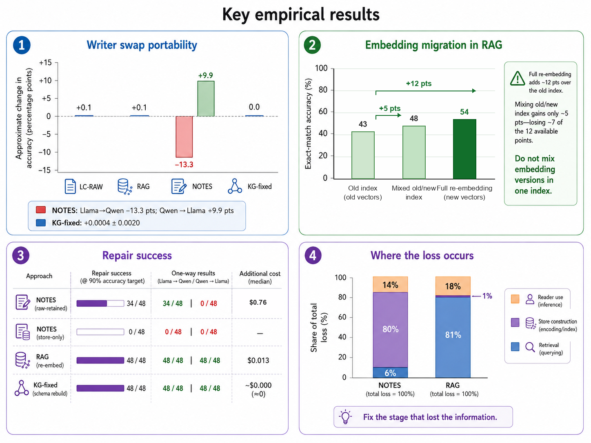

Does Your Agent's Memory Survive a Model Upgrade?
TL;DR
- Goyal & Ray (LinkedIn; arXiv 2609.05339) run the migration experiment everyone skips: keep the memory store fixed, swap the model (or embedder) underneath it, and measure what breaks. Four formats — raw history (LC-RAW), chunked retrieval (RAG), model-written notes (NOTES), fixed-schema knowledge graph (KG-fixed) — over 48 synthetic histories with randomized answer codes and exact scoring, so chance is ~0 and no LLM judge is involved.
- Structure survives; prose doesn't. A writer swap moves KG-fixed accuracy by +0.0004 ± 0.0020 — statistically nothing — while NOTES swings asymmetrically: Qwen-written notes lift Llama by +9.9 points, Llama-written notes cost Qwen −13.3. Averaging the two directions yields ≈0 and hides the failure entirely. Meanwhile a "gradual" embedding upgrade (50/50 mixed index of bge v1.0+v1.5 vectors, same 1024 dims, no errors thrown) forfeits ~60% of the 11.9-point gain that full re-embedding delivers.
- Diagnosis and repair follow the same split: 80% of the NOTES deficit is information destroyed at write time (so store-only rewriting hits the 90%-recovery target in 0/48 cases — you cannot rewrite your way back to facts the notes never kept), while 81% of the RAG deficit is retrieval misses (so full re-embedding repairs 48/48 at ~$0.013/history). Raw history enables NOTES repair — but only 34/48, and only when the repair model is strong enough to finish the job.
Why this matters
Memory stores and models have different lifetimes. A store accumulates for months or years; the model gets swapped for capability, cost, latency, or provider reasons on a much shorter cycle — and the new model silently inherits the old store. Nothing errors. The vector DB still returns results. Accuracy just drops. Every memory paper in this tracker evaluates a fixed system remembering over time (LongMemEval-style); this is the first controlled study I've tracked of the orthogonal axis — the same memory read by a different model — and that axis is where production agents actually live.
The asymmetry result should change how you read every "model-written notes" memory design. It isn't that notes are bad; it's that the note-writing model's quality becomes a permanent, load-bearing part of the store. In calibration, Qwen's notes preserved 85.6% of required evidence spans within budget; Llama's preserved 64.5% while using more bytes. Equal byte budgets do not produce equally informative stores, and no later reader — however capable — can recover a fact the writer omitted. The practical corollary is blunt: a migration test that only checks A→B told you nothing about B→A.
There's also a methodological reason to like this paper: four hypotheses, expected directions, a 5-point action threshold, and Holm correction were locked in a signed Git tag (hypothesis-lock-v1) before main data collection. Two hypotheses survived (mixed-index cost, raw-vs-store-only repair), two didn't (the symmetric writer-swap penalties) — and the paper reports that honestly, with the interesting finding living in the direction-specific results the symmetric averages wash out.
The core idea
Separate the four roles an "agent with memory" conflates: the actor produces experience, the writer $W$ persists it, the reader $R$ later consumes it, the embedder $E$ routes retrieval. An upgrade changes one role at a time while the history $X$ stays fixed: $S=\mathrm{Write}_s(X;W,E)$, answers come from $\mathrm{Read}_s(q;S,R)$. Compare reader $B$ on writer $A$'s store against $B$ on its own store, and migration loss separates cleanly from reader ability.
The headline metric is Retained Performance After Swap:
where $N_s(B)$ is reader $B$'s accuracy on a store it wrote itself and chance ≈ 0 thanks to randomized answer codes; RPAS = 1 means nothing lost, and values above 1 mean the inherited store is better than the reader's own (which actually happens for Qwen→Llama NOTES). Cost-to-Recover is the price of the cheapest repair that restores $\geq X\%$ of own-store performance, $\infty$ if none does.
The diagnostic decomposition is the tool worth stealing. Supply the reader with (i) nothing extra, (ii) the exact stored items containing the answer, (iii) the original raw event, and the three accuracy jumps split total loss additively:
where $a^{\mathrm{normal}}, a^{\mathrm{stored}}, a^{\mathrm{raw}}$ are exact-match accuracies under the three conditions. This is what licenses the "80% construction / 81% retrieval" claims below.

Figure 1 from the paper: what each format persists, how it's read, its main portability risk, and its repair path. KG-fixed is most portable in this study; NOTES most writer-dependent; RAG most retrieval-dependent.
How it works
The study design, as a harness you could rerun on your own stack:
fix 48 scripted histories X (randomized entity/value codes; 160 questions each;
chance accuracy ~ 0; exact-match scoring, no LLM judge)
models: Llama-3.1-8B-Instruct <-> Qwen2.5-7B-Instruct-1M (fixed local versions)
embedders: bge-large-en v1.0 -> v1.5 (both 1024-d; cross-space cosine 0.904)
Test 1 (writer swap): for each format in {NOTES, KG-fixed}:
both models write a store from X
both models read every store
LC-RAW and RAG have no model writer -> controls
Test 2 (embedding swap): compare old index | full re-embed | 50/50 mixed | ideal router
Test 3 (repair): rebuild NOTES from retained raw history vs from store alone,
re-embed RAG, rebuild KG into shared schema — at 3 matched budgets;
success = reach 90/95/99% of fresh own-store accuracy
Test 4 (diagnosis): inject (a) the exact stored item, (b) the raw event;
accuracy deltas split loss into retrieval/construction/reader
report RPAS per DIRECTION (never averaged), CTR, and the loss decomposition
Guardrails worth copying: pre-registered contrasts in a signed git tag; runs abort if the served model/tokenizer/embedder doesn't match the manifest (the embedding test explicitly verifies the two spaces differ — cross-space cosine 0.904 against a 0.999 identity threshold); every repeat gets its own cache key after an early bug reused cached answers across noise repeats; output-limit stops count as failed repairs at that budget, not excluded runs.
Resource limits are matched where possible — same writer token allowance, 128 KiB NOTES cap, same reader context budget, same retrieval settings (event chunks ≈512 chars, cosine top-8, no reranker) — with the honest caveat that KG-fixed reads a larger structured store, so format and access pattern are partially confounded.
Results
- Writer swap (Test 1). KG-fixed: swap Δ of −0.11 and +0.02 points in the two directions, own-store accuracy 0.845–0.988. NOTES: Llama→Qwen −13.28, Qwen→Llama +9.91. The schema fixes keys, relations, and reading rules so the model only fills in values; free-form prose bakes the writer's competence into the store forever.
- Embedding migration (Test 2). Old index 0.426 → full re-embed 0.545 (+11.90); 50/50 mixed index only 0.475 (+4.96). Both embedders emit 1024-d vectors, so the mixed index runs without a single error while silently forfeiting most of the upgrade. An ideal version-aware router reaches 0.596 — an upper bound, but it says siloing spaces and routing by index version recovers what mixing loses.
- Retrieval was already the RAG bottleneck pre-migration: LC-RAW reads score 0.712–0.911 while RAG scores 0.535–0.565 — the top-8 dense retriever surfaces the needed evidence only ~60% of the time regardless of reader. Supplying the correct chunks lifts readers to 0.88–0.95.
- Loss decomposition (Test 4). NOTES: construction 0.467 of a 0.584 total deficit (80%), retrieval 6%, reader residual 14%. RAG: retrieval 0.364 of 0.450 (81%), construction 1%. Rewriting inherited notes into the new reader's style helps not at all (−0.01 to −0.04; Llama's rewrites dropped exact identifiers 46% of the time). It's missing content, not unfamiliar phrasing.
- Repair (Test 3). Store-only NOTES rewriting: 0/48 at the 90% target, both directions, every budget. Raw-retained NOTES repair: 34/48 with Qwen as repairer (median ~$0.76), 0/48 with Llama — every attempt died at the output-token limit. RAG full re-embed: 48/48 at ~$0.013. KG schema rebuild: 45–48/48 at ≈$0. Mechanical rebuilds are cheap and reliable; generative reconstruction is possible but conditional on the repairer.
- Pre-registered scorecard: mixed-index cost (H2, +6.95pp) and raw-vs-store repair (H7a, +8.90pp) supported after Holm correction; the symmetric writer-swap penalties (H1, H4a) not supported — because the two directions cancel, which is itself the finding.

Figure 3 from the paper: the four headline results. Note panel 1's legend — the ±5-point symmetric average would report "no effect" for NOTES.
How it connects
- Recuris provided the existence proof from the other side: a structured, component-attributed memory evolved on a mid-size model transferred unchanged to GPT-5.6 Sol (+17.8) and Opus 5 (+15.6). This paper explains why that worked — Recuris's working-memory/skill format is much closer to KG-fixed than to NOTES. Structure is what ports.
- Selective Forgetting (arXiv 2608.28978, tracked) found graph memory underperforms flat retrieval on LongMemEval — day-one accuracy. Read together, the two papers describe a real tradeoff surface: schemas can cost you expressiveness today and save you portability tomorrow. Neither number alone should pick your format.
- MemHarness (arXiv 2607.28272, tracked): its thesis that memory is reconstructed, not replayed, is the cognitive-science cousin of the construction-loss result here: what the writer didn't encode, no reader reconstructs. Same lesson, measured with a swap instead of a metaphor.
- Cross-Model KV Cache Transfer (arXiv 2608.03893, tracked) ports the other memory — the KV cache — across models with a closed-form linear map. Notably that works because KV caches are mechanical structure, exactly the property this paper finds portable; nobody has a linear map for prose notes.
- Agent Zero Memory (arXiv 2608.29606, tracked) builds provenance and citation-locking into the store; this paper's playbook item — record writer/prompt/schema/embedder version so regressions are attributable — is the migration-era argument for that design.
- Today's crop also pulled in engrim (SQLite FTS5 + static vectors as coding-agent project memory): a store whose retrieval layer is lexical+static is quietly making the embedding-migration problem smaller, at the cost this paper would tell you to measure — retrieval recall.
Critical take
The controls are the paper's strength and its cage. Two sub-10B open-weight models, one cross-family pair, scripted histories with randomized codes that fit entirely in both context windows, a deliberately spartan retriever (single-stage dense, top-8, no reranker, no hybrid) — every headline number is honest for that box. The 40% retrieval miss rate and the 60%-forfeited mixed-index gain will shrink under a production stack with reranking and hybrid search; the KG-fixed near-zero swap penalty rides on a schema hand-built for a synthetic workload whose facts it covers by construction. Real agent memory is dominated by exactly the fuzzy, schema-escaping material (preferences, style, half-decisions) that NOTES exists to hold — so "use KG-fixed" is not the actionable conclusion; "know which of your memories are schema-shaped and migrate the rest with direction-specific tests" is. The repair asymmetry (Qwen repairs 34/48, Llama 0/48 purely on output-limit exhaustion) also conflates repairer capability with migration direction — the authors flag it, but it means the "raw history buys a second chance" number is really "raw history plus a sufficiently capable repairer." And frontier-model swaps, where both writer and reader are far more capable, could compress the NOTES asymmetry substantially — this is the obvious replication someone should run. Still: the roles-decomposition, the direction-specific reporting, and the loss decomposition are immediately reusable, and the failure modes it names all fail silently in production. That's worth the price of admission.
If you remember three things
- Never average migration directions. NOTES moved +9.9 one way and −13.3 the other; the symmetric mean is ~0 and both pre-registered symmetric tests "failed" while the system was badly broken in one direction. Test A→B and B→A separately, always.
- Never mix embedding versions in one index — same dimensionality means it fails silently, and the 50/50 mix kept only ~40% of the re-embedding gain here. Build the new index fully, cut over, or route strictly by version.
- Diagnose before you repair, in this order: retrieved? constructed? read? NOTES loses 80% at write time (only raw history can fix it — store-only repair went 0/48); RAG loses 81% at retrieval (re-embedding fixes it for ~$0.01). Swapping the reader model is the last lever, not the first.